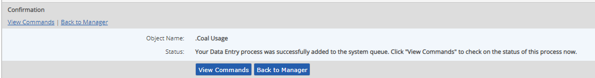

The Command Log keeps track of data transactions sent to the system.
In order to ensure maximum performance and prevent browser lag time, the Management System uses "asynchronous transactions" to queue data transactions as they are sent to the system. A slight lag time may occur between the time a transaction is sent to the system and the results can be seen in the system—depending on the size of data transactions, the extent of calculations or modifications involved, or the amount of activity in the system.
You can check the status of a transaction or review recent activity by viewing the Command Log.
The confirmation message you receive when you complete a data transaction has a button to View Commands, so you can go directly to the Command Log to check on the status of that transaction. The command status may initially show "Processing." Use the Refresh button to refresh results until you see that the status is Succeeded. After the transaction is complete, you will be able to view the resultant data.

If you have the Manage Commands right, you can view all commands sent to the system in Command Log. Users without the Manage Commands right see only their own transactions in the Command Log.
You can also search for transactions by a date/time range when they were entered in the system and view commands for a specific object.
Only asynchronous processes display in the command log. Asynchronous processes include adding data to parameters, bulk tool jobs, integrations, and object copies. While processes like updates to custom field values or EQL queries are not asynchronous processes.
Command logs can appear to execute out of order. Some commands have an issued date earlier than other commands but are processed later than these other commands. The most common reason is order priority. Webservice batches are processed at a lower priority than user-initiated batches. A less common reason is that the command log was deleted prior or during execution of the command. In this case, the command log record is reinserted with a new issued date. You will then see the oddity that the start time is before the issued date.
Deleting commands from the command log removes the historical record from view in the command log. Depending on the command's status, the following occurs: